data_in = '../data'
data_out = '../data'
data_prefix = 'novels'Metadata
Course: DS 5001
Module: 10 Lab
Topic: Sentiment Analysis of Novels
Author: R.C. Alvarado
Date: 02 April 2023 (revised)Purpose: Use the NRC lexicon to explore sentiment in two novels.
Set Up
Config
novels_csv = f'{data_in}/novels/{data_prefix}-CORPUS.csv'
OHCO = ['book_id', 'chap_id', 'para_num', 'sent_num'] # We exclude genre
CHAPS = OHCO[2:3]
PARAS = OHCO[2:4]
SENTS = OHCO[2:5]dracula = ('stoker','dracula')
norabbey = ('austen','northangerabbey')salex_csv = f'{data_in}/lexicons/salex_nrc.csv'
nrc_cols = "nrc_negative nrc_positive nrc_anger nrc_anticipation nrc_disgust nrc_fear nrc_joy nrc_sadness nrc_surprise nrc_trust".split()
# emo = 'polarity'
emo = 'sentiment'Import
import pandas as pd
import numpy as np
import seaborn as sns
from IPython.display import display, HTMLsns.set()
# sns.set_style('whitegrid')Get Lexicon
salex = pd.read_csv(salex_csv).set_index('term_str')
salex.columns = [col.replace('nrc_','') for col in salex.columns]# salex['polarity'] = salex.positive - salex.negativesalex| anger | anticipation | disgust | fear | joy | negative | positive | sadness | surprise | trust | sentiment | |
|---|---|---|---|---|---|---|---|---|---|---|---|
| term_str | |||||||||||
| abandon | 0 | 0 | 0 | 1 | 0 | 1 | 0 | 1 | 0 | 0 | -1 |
| abandoned | 1 | 0 | 0 | 1 | 0 | 1 | 0 | 1 | 0 | 0 | -1 |
| abandonment | 1 | 0 | 0 | 1 | 0 | 1 | 0 | 1 | 1 | 0 | -1 |
| abduction | 0 | 0 | 0 | 1 | 0 | 1 | 0 | 1 | 1 | 0 | -1 |
| aberration | 0 | 0 | 1 | 0 | 0 | 1 | 0 | 0 | 0 | 0 | -1 |
| ... | ... | ... | ... | ... | ... | ... | ... | ... | ... | ... | ... |
| young | 0 | 1 | 0 | 0 | 1 | 0 | 1 | 0 | 1 | 0 | 1 |
| youth | 1 | 1 | 0 | 1 | 1 | 0 | 1 | 0 | 1 | 0 | 1 |
| zeal | 0 | 1 | 0 | 0 | 1 | 0 | 1 | 0 | 1 | 1 | 1 |
| zealous | 0 | 0 | 0 | 0 | 1 | 0 | 1 | 0 | 0 | 1 | 1 |
| zest | 0 | 1 | 0 | 0 | 1 | 0 | 1 | 0 | 0 | 1 | 1 |
3688 rows × 11 columns
Get lexicon columns
emo_cols = "anger anticipation disgust fear joy sadness surprise trust sentiment".split()emo_cols ['anger',
'anticipation',
'disgust',
'fear',
'joy',
'sadness',
'surprise',
'trust',
'sentiment']Get Novels
novels_csv'../data/novels/novels-CORPUS.csv'LIB = pd.read_csv(f"{data_in}/novels/{data_prefix}-LIB.csv").set_index('book_id').sort_index()TOKENS = pd.read_csv(novels_csv).set_index(OHCO).sort_index()
TOKENS = TOKENS.join(LIB)
TOKENS = TOKENS.reset_index().set_index(['author_id']+OHCO)LIB| genre_id | author_id | |
|---|---|---|
| book_id | ||
| adventures | d | doyle |
| baskervilles | d | doyle |
| castleofotranto | g | walpole |
| christmascarole | g | dickens |
| dracula | g | stoker |
| frankenstein | g | shelley |
| marieroget | d | poe |
| monk | g | lewis |
| moonstone | d | collins |
| northangerabbey | g | austen |
| oldenglishbaron | g | reeve |
| pitandpendulum | g | poe |
| reddeath | g | poe |
| ruemorgue | d | poe |
| scarlet | d | doyle |
| secretadversary | d | christie |
| signoffour | d | doyle |
| styles | d | christie |
| udolpho | g | radcliffe |
| usher | g | poe |
TOKENS.head()| token_num | pos | term_str | genre_id | |||||
|---|---|---|---|---|---|---|---|---|
| author_id | book_id | chap_id | para_num | sent_num | ||||
| doyle | adventures | 1 | 0 | 1 | 0 | DT | a | d |
| 1 | 1 | NNP | scandal | d | ||||
| 1 | 2 | NNP | in | d | ||||
| 1 | 3 | NNP | bohemia | d | ||||
| 1 | 0 | 0 | NN | i | d |
TOKENS = TOKENS.join(salex, on='term_str', how='left')
TOKENS[emo_cols] = TOKENS[emo_cols].fillna(0)TOKENS[salex.columns].sample(10)| anger | anticipation | disgust | fear | joy | negative | positive | sadness | surprise | trust | sentiment | |||||
|---|---|---|---|---|---|---|---|---|---|---|---|---|---|---|---|
| author_id | book_id | chap_id | para_num | sent_num | |||||||||||
| walpole | castleofotranto | 2 | 141 | 0 | 0.0 | 0.0 | 0.0 | 0.0 | 0.0 | NaN | NaN | 0.0 | 0.0 | 0.0 | 0.0 |
| stoker | dracula | 19 | 2 | 2 | 0.0 | 0.0 | 0.0 | 0.0 | 0.0 | NaN | NaN | 0.0 | 0.0 | 0.0 | 0.0 |
| doyle | adventures | 4 | 32 | 0 | 0.0 | 0.0 | 0.0 | 0.0 | 0.0 | NaN | NaN | 0.0 | 0.0 | 0.0 | 0.0 |
| radcliffe | udolpho | 31 | 12 | 6 | 0.0 | 0.0 | 0.0 | 0.0 | 0.0 | NaN | NaN | 0.0 | 0.0 | 0.0 | 0.0 |
| christie | secretadversary | 18 | 147 | 2 | 0.0 | 0.0 | 0.0 | 0.0 | 0.0 | NaN | NaN | 0.0 | 0.0 | 0.0 | 0.0 |
| doyle | signoffour | 12 | 119 | 1 | 0.0 | 0.0 | 0.0 | 0.0 | 0.0 | NaN | NaN | 0.0 | 0.0 | 0.0 | 0.0 |
| lewis | monk | 6 | 54 | 1 | 0.0 | 0.0 | 0.0 | 0.0 | 0.0 | NaN | NaN | 0.0 | 0.0 | 0.0 | 0.0 |
| christie | styles | 4 | 23 | 2 | 0.0 | 0.0 | 0.0 | 0.0 | 0.0 | NaN | NaN | 0.0 | 0.0 | 0.0 | 0.0 |
| radcliffe | udolpho | 52 | 38 | 2 | 0.0 | 0.0 | 0.0 | 0.0 | 0.0 | NaN | NaN | 0.0 | 0.0 | 0.0 | 0.0 |
| 50 | 45 | 3 | 0.0 | 0.0 | 0.0 | 0.0 | 0.0 | NaN | NaN | 0.0 | 0.0 | 0.0 | 0.0 |
TOKENS[['term_str'] + emo_cols].sample(10)| term_str | anger | anticipation | disgust | fear | joy | sadness | surprise | trust | sentiment | |||||
|---|---|---|---|---|---|---|---|---|---|---|---|---|---|---|
| author_id | book_id | chap_id | para_num | sent_num | ||||||||||
| doyle | adventures | 1 | 153 | 0 | good | 0.0 | 1.0 | 0.0 | 0.0 | 1.0 | 0.0 | 1.0 | 1.0 | 1.0 |
| stoker | dracula | 19 | 16 | 1 | show | 0.0 | 0.0 | 0.0 | 0.0 | 0.0 | 0.0 | 0.0 | 0.0 | 0.0 |
| radcliffe | udolpho | 50 | 41 | 7 | over | 0.0 | 0.0 | 0.0 | 0.0 | 0.0 | 0.0 | 0.0 | 0.0 | 0.0 |
| collins | moonstone | 60 | 50 | 0 | knows | 0.0 | 0.0 | 0.0 | 0.0 | 0.0 | 0.0 | 0.0 | 0.0 | 0.0 |
| 72 | 0 | 5 | it | 0.0 | 0.0 | 0.0 | 0.0 | 0.0 | 0.0 | 0.0 | 0.0 | 0.0 | ||
| radcliffe | udolpho | 19 | 17 | 0 | carlo | 0.0 | 0.0 | 0.0 | 0.0 | 0.0 | 0.0 | 0.0 | 0.0 | 0.0 |
| doyle | adventures | 4 | 19 | 1 | of | 0.0 | 0.0 | 0.0 | 0.0 | 0.0 | 0.0 | 0.0 | 0.0 | 0.0 |
| radcliffe | udolpho | 13 | 23 | 1 | emily | 0.0 | 0.0 | 0.0 | 0.0 | 0.0 | 0.0 | 0.0 | 0.0 | 0.0 |
| lewis | monk | 2 | 21 | 0 | sufficient | 0.0 | 0.0 | 0.0 | 0.0 | 0.0 | 0.0 | 0.0 | 0.0 | 0.0 |
| 4 | 187 | 8 | fruitless | 0.0 | 0.0 | 0.0 | 0.0 | 0.0 | 1.0 | 0.0 | 0.0 | -1.0 |
TOKENS[emo_cols] = TOKENS[emo_cols].fillna(0)TOKENS.head()| token_num | pos | term_str | genre_id | anger | anticipation | disgust | fear | joy | negative | positive | sadness | surprise | trust | sentiment | |||||
|---|---|---|---|---|---|---|---|---|---|---|---|---|---|---|---|---|---|---|---|
| author_id | book_id | chap_id | para_num | sent_num | |||||||||||||||
| doyle | adventures | 1 | 0 | 1 | 0 | DT | a | d | 0.0 | 0.0 | 0.0 | 0.0 | 0.0 | NaN | NaN | 0.0 | 0.0 | 0.0 | 0.0 |
| 1 | 1 | NNP | scandal | d | 0.0 | 0.0 | 0.0 | 1.0 | 0.0 | 1.0 | 0.0 | 0.0 | 0.0 | 0.0 | -1.0 | ||||
| 1 | 2 | NNP | in | d | 0.0 | 0.0 | 0.0 | 0.0 | 0.0 | NaN | NaN | 0.0 | 0.0 | 0.0 | 0.0 | ||||
| 1 | 3 | NNP | bohemia | d | 0.0 | 0.0 | 0.0 | 0.0 | 0.0 | NaN | NaN | 0.0 | 0.0 | 0.0 | 0.0 | ||||
| 1 | 0 | 0 | NN | i | d | 0.0 | 0.0 | 0.0 | 0.0 | 0.0 | NaN | NaN | 0.0 | 0.0 | 0.0 | 0.0 |
DRACULA = TOKENS.sort_index().loc[dracula].copy()
NORABBEY = TOKENS.sort_index().loc[norabbey].copy()DRACULA[emo_cols].mean().sort_values().plot.barh();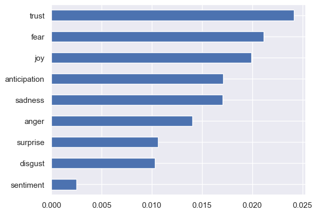
NORABBEY[emo_cols].mean().sort_values().plot.barh();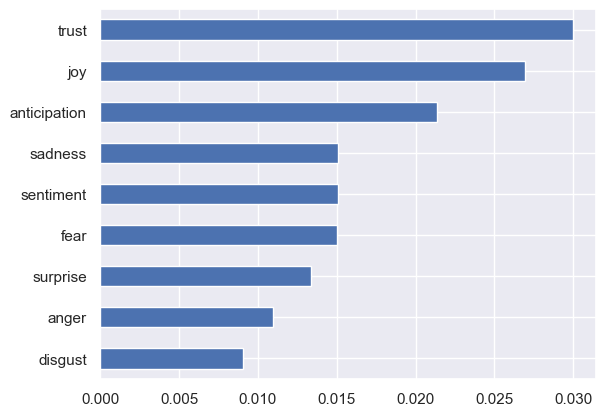
Sentiment by Chapter
DRACULA_chaps = DRACULA.groupby(CHAPS)[emo_cols].mean()NORABBEY_chaps = NORABBEY.groupby(CHAPS)[emo_cols].mean()def plot_sentiments(df, emo='sentiment'):
FIG = dict(figsize=(25, 5), legend=True, fontsize=14, rot=45)
df[emo].plot(**FIG)plot_sentiments(DRACULA_chaps, ['trust','fear','joy','sentiment'])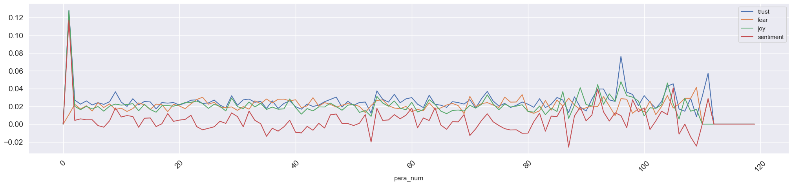
plot_sentiments(DRACULA_chaps, ['sentiment'])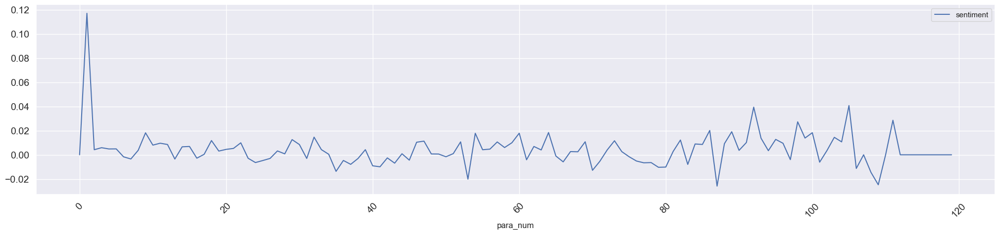
plot_sentiments(NORABBEY_chaps, ['trust','joy','anticipation','sentiment'])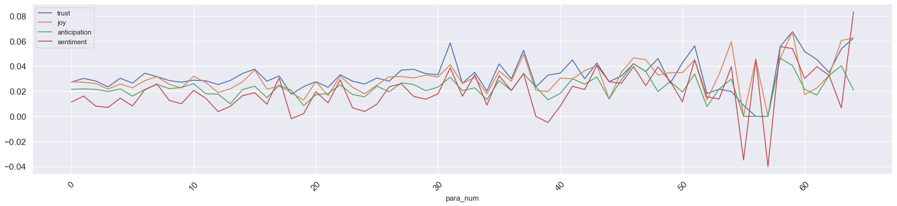
plot_sentiments(NORABBEY_chaps, ['sentiment'])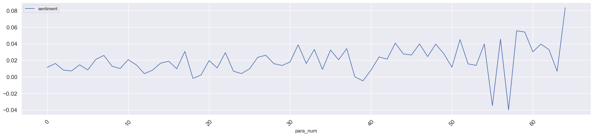
Explore Sentiment in Texts
DRACULA| token_num | pos | term_str | genre_id | anger | anticipation | disgust | fear | joy | negative | positive | sadness | surprise | trust | sentiment | |||
|---|---|---|---|---|---|---|---|---|---|---|---|---|---|---|---|---|---|
| chap_id | para_num | sent_num | |||||||||||||||
| 1 | 0 | 0 | 0 | NNP | jonathan | g | 0.0 | 0.0 | 0.0 | 0.0 | 0.0 | NaN | NaN | 0.0 | 0.0 | 0.0 | 0.0 |
| 0 | 1 | NNP | harkers | g | 0.0 | 0.0 | 0.0 | 0.0 | 0.0 | NaN | NaN | 0.0 | 0.0 | 0.0 | 0.0 | ||
| 0 | 2 | NNP | journal | g | 0.0 | 0.0 | 0.0 | 0.0 | 0.0 | NaN | NaN | 0.0 | 0.0 | 0.0 | 0.0 | ||
| 1 | 0 | 0 | NN | kept | g | 0.0 | 0.0 | 0.0 | 0.0 | 0.0 | NaN | NaN | 0.0 | 0.0 | 0.0 | 0.0 | |
| 0 | 1 | IN | in | g | 0.0 | 0.0 | 0.0 | 0.0 | 0.0 | NaN | NaN | 0.0 | 0.0 | 0.0 | 0.0 | ||
| ... | ... | ... | ... | ... | ... | ... | ... | ... | ... | ... | ... | ... | ... | ... | ... | ... | ... |
| 27 | 119 | 0 | 6 | IN | of | g | 0.0 | 0.0 | 0.0 | 0.0 | 0.0 | NaN | NaN | 0.0 | 0.0 | 0.0 | 0.0 |
| 0 | 7 | NNP | dracula | g | 0.0 | 0.0 | 0.0 | 0.0 | 0.0 | NaN | NaN | 0.0 | 0.0 | 0.0 | 0.0 | ||
| 0 | 8 | IN | by | g | 0.0 | 0.0 | 0.0 | 0.0 | 0.0 | NaN | NaN | 0.0 | 0.0 | 0.0 | 0.0 | ||
| 0 | 9 | NNP | bram | g | 0.0 | 0.0 | 0.0 | 0.0 | 0.0 | NaN | NaN | 0.0 | 0.0 | 0.0 | 0.0 | ||
| 0 | 10 | NNP | stoker | g | 0.0 | 0.0 | 0.0 | 0.0 | 0.0 | NaN | NaN | 0.0 | 0.0 | 0.0 | 0.0 |
162045 rows × 15 columns
DRACULA['html'] = DRACULA.apply(lambda x: "<span class='sent{}'>{}</span>".format(int(np.sign(x[emo])), x.term_str), 1)
NORABBEY['html'] = NORABBEY.apply(lambda x: "<span class='sent{}'>{}</span>".format(int(np.sign(x[emo])), x.term_str), 1)DRACULA['html'].sample(10)chap_id para_num sent_num
3 26 7 <span class='sent0'>for</span>
27 8 12 <span class='sent0'>night</span>
7 16 4 <span class='sent0'>took</span>
6 6 5 <span class='sent0'>is</span>
16 30 2 <span class='sent0'>shall</span>
5 11 4 <span class='sent1'>deal</span>
20 10 2 <span class='sent0'>new</span>
24 14 0 <span class='sent0'>for</span>
27 40 1 <span class='sent0'>which</span>
14 3 13 <span class='sent0'>if</span>
Name: html, dtype: objectDRACULA_sents = DRACULA.groupby(SENTS)[emo_cols].mean()
NORABBEY_sents = NORABBEY.groupby(SENTS)[emo_cols].mean()DRACULA_sents['sent_str'] = DRACULA.groupby(SENTS).term_str.apply(lambda x: x.str.cat(sep=' '))
DRACULA_sents['html_str'] = DRACULA.groupby(SENTS).html.apply(lambda x: x.str.cat(sep=' '))NORABBEY_sents['sent_str'] = NORABBEY.groupby(SENTS).term_str.apply(lambda x: x.str.cat(sep=' '))
NORABBEY_sents['html_str'] = NORABBEY.groupby(SENTS).html.apply(lambda x: x.str.cat(sep=' '))def sample_sentences(df):
rows = []
for idx in df.sample(10).index:
valence = round(df.loc[idx, emo], 4)
t = 0
if valence > t: color = '#ccffcc'
elif valence < t: color = '#ffcccc'
else: color = '#f2f2f2'
z=0
rows.append("""<tr style="background-color:{0};padding:.5rem 1rem;font-size:110%;">
<td>{1}</td><td>{3}</td><td width="400" style="text-align:left;">{2}</td>
</tr>""".format(color, valence, df.loc[idx, 'html_str'], idx))
display(HTML('<style>#sample1 td{font-size:120%;vertical-align:top;} .sent-1{color:red;font-weight:bold;} .sent1{color:green;font-weight:bold;}</style>'))
display(HTML('<table id="sample1"><tr><th>Sentiment</th><th>ID</th><th width="600">Sentence</th></tr>'+''.join(rows)+'</table>'))sample_sentences(DRACULA_sents)| Sentiment | ID | Sentence |
|---|---|---|
| -0.0149 | (28, 11) | we shall not go so early that the policemen who have then little to think of shall deem it strange but we shall go after ten oclock when there are many about and such things would be done were we indeed owners of the house the horses had ceased to moan and lay still on the ground the snow fell on them softly and they grew whiter |
| 0.0 | (35, 17) | life is nothings i heed him not |
| -0.0226 | (25, 4) | but this is heresy and i must not say it itll be time for ye to be getting scart when ye see the tombsteans all run away with and the place as bare as a stubble field under way at p m then when the table was cleared and he had lit his pipe he said in great perplexity then i come to you and ask you out of your so much kindness to tell me all of it that you can remember it is too great a strain for a woman to bear i have something that i must say before i die or before my poor crushed brain dies anyhow i spread it over centuries and time is on my side i turned to her and looking in her eyes said |
| 0.0097 | (17, 9) | lucy had a headache and went early to bed it may be that it is the doubt which haunts him that when the doubt is removed no matter which waking or dreaming may prove the truth he will be more satisfied and better able to bear the shock she came at once after saying pleasantly to mr renfield good bye and i hope i may see you often under auspices pleasanter to yourself to which to my astonishment he replied there have been volcanoes some of whose openings still send out waters of strange properties and gases that kill or make to vivify |
| 0.0217 | (93, 14) | there seem to be endless streams running down the mountains into this river but as none of them are very large at present at all events though they are terrible doubtless in winter and when the snow melts the horsemen may not have met much obstruction |
| 0.0033 | (5, 4) | mem i must ask the count all about them whenever he spoke of his house he always said we and spoke almost in the plural like a king speaking the day was unusually fine till the afternoon when some of the gossips who frequent the east cliff churchyard and from that commanding eminence watch the wide sweep of sea visible to the north and east called attention to a sudden show of mares tails high in the sky to the north west i flung the warm shawl over her and drew the edges tight round her neck for i dreaded lest she should get some deadly chill from the night air unclad as she was when we entered we met mrs westenra coming out of the morning room i have more than him to avoid dare you come with me when he saw the rent in the lead the blood rushed to his face for an instant but as quickly fell away again so that he remained of a ghastly whiteness he was still silent you will need all your faith even you who have had such an experience as that of to day that horrid thing has the wolves and the rats and his own kind to help him so i suppose he isnt above trying to use a respectable lunatic but yed better be up arter im soon in the mornin or maybe ye wont ketch im for sam gets off main early never mind the booze the night afore but for the life of me i cant imagine how the two things occurred and besides there is nothing in all the world that can give me more pain than i have already endured than i suffer now you are going to be so good to me as to take me with you |
| 0.0 | (85, 22) | he said |
| -0.0385 | (60, 11) | mrs harker grew ghastly white so that the scar on her forehead seemed to burn but she folded her hands meekly and looked up in prayer |
| 0.0303 | (57, 18) | it was strange to see the snow falling in such heavy flakes close to us and beyond the sun shining more and more brightly as it sank down towards the far mountain tops |
| 0.0115 | (63, 5) | i am getting fearfully anxious about him then he began to chat of all things except ourselves and diseases and with such an infinite geniality that i could see poor lucys pretense of animation merge into reality i know where my thoughts are i took them before we knew that all was yours so that no strange hand might touch them no strange eye look through words into her soul you can get away if you are in a hurry by the train which will bring you to paddington by it is just as that dear good professor van helsing said he is true grit and he improves under strain that would kill a weaker nature i was bewildered and strangely enough i did not want to hinder him our work was not over and would never be until we should have found the missing box god saw the look that she turned on me as she spoke and if there be indeed a recording angel that look is noted to her everlasting honour |
sample_sentences(NORABBEY_sents)| Sentiment | ID | Sentence |
|---|---|---|
| -0.0204 | (19, 3) | i am sure of this that if everybody was to drink their bottle a day there would not be half the disorders in the world there are now one of the best players we have by the by and we had a little touch together though i was almost afraid of him at first the odds were five to four against me and if i had not made one of the cleanest strokes that perhaps ever was made in this world i took his ball exactly but i could not make you understand it without a table however i did beat him this is only doing it in a ruder way and how do i know that mr thorpe has he may be mistaken again perhaps he led me into one act of rudeness by his mistake on friday there are some charming little villas about richmond |
| 0.0177 | (2, 1) | but from fifteen to seventeen she was in training for a heroine she read all such works as heroines must read to supply their memories with those quotations which are so serviceable and so soothing in the vicissitudes of their eventful lives must from situation be at this time the intimate friend and confidante of her sister my dear mrs allen i long to introduce them they will be so delighted to see you the tallest is isabella my eldest is not she a fine young woman she had found some acquaintance had been so lucky too as to find in them the family of a most worthy old friend and as the completion of good fortune had found these friends by no means so expensively dressed as herself i am very sorry for it but really i thought i was in very good time tis james was uttered at the same moment by catherine and on catching the young mens eyes the horse was immediately checked with a violence which almost threw him on his haunches and the servant having now scampered up the gentlemen jumped out and the equipage was delivered to his care he looked as handsome and as lively as ever and was talking with interest to a fashionable and pleasing looking young woman who leant on his arm and whom catherine immediately guessed to be his sister thus unthinkingly throwing away a fair opportunity of considering him lost to her forever by being married already why you have not forgot our engagement am i never to be acquainted with him to milsom street she was directed and having made herself perfect in the number hastened away with eager steps and a beating heart to pay her visit explain her conduct and be forgiven tripping lightly through the church yard and resolutely turning away her eyes that she might not be obliged to see her beloved isabella and her dear family who she had reason to believe were in a shop hard by was it the part of a friend thus to expose her feelings to the notice of others john would have me go for he vowed he would not drive her because she had such thick ankles dont defend her my dear creature she replied do not think me such a simpleton as to be always wanting to confine him to my elbow then why does he stay here it was the first time of her being decidedly in his company and she had hoped to be now able to form her opinion of him but she scarcely heard his voice while his father remained in the room and even afterwards so much were his spirits affected she could distinguish nothing but these words in a whisper to eleanor how glad i shall be when you are all off with difficulty for something seemed to resist her efforts she raised the lid a few inches but at that moment a sudden knocking at the door of the room made her starting quit her hold and the lid closed with alarming violence heaven forbid that henry tilney should ever know her folly the generals improving hand had not loitered here every modern invention to facilitate the labour of the cooks had been adopted within this their spacious theatre and when the genius of others had failed his own had often produced the perfection wanted the generals early walk ill timed as it was in every other view was favourable here and when she knew him to be out of the house she directly proposed to miss tilney the accomplishment of her promise of the alps and pyrenees with their pine forests and their vices they might give a faithful delineation and italy switzerland and the south of france might be as fruitful in horrors as they were there represented i really am quite ashamed of my idleness but in this horrid place one can find time for nothing henry and her own heart only were privy to the shocking suspicions which she had so idly entertained and equally safe did she believe her secret with each they felt and they deplored but they could not resent it and they parted endeavouring to hope that such a change in the general as each believed almost impossible might speedily take place to unite them again in the fullness of privileged affection |
| 0.0123 | (8, 4) | but to her utter amazement she found that to proceed along the room was by no means the way to disengage themselves from the crowd it seemed rather to increase as they went on whereas she had imagined that when once fairly within the door they should easily find seats and be able to watch the dances with perfect convenience such true blood do not say miss tilney was not angry cried catherine because i know she was for she would not see me this morning when i called i saw her walk out of the house the next minute after my leaving it i was hurt but i was not affronted henry had certainly been only in jest in what he had told her that morning catherines spirits however were tranquillized but for an instant for eleanors cheeks were pale and her manner greatly agitated they began their walk and mrs morland was not entirely mistaken in his object in wishing it |
| 0.0157 | (28, 3) | brown not fair and and not very dark to ease her mind and ascertain by the opinion of an unprejudiced person what her own conduct had really been she took occasion to mention before mr allen the half settled scheme of her brother and the thorpes for the following day he talked of foregrounds distances and second distances side screens and perspectives lights and shades and catherine was so hopeful a scholar that when they gained the top of beechen cliff she voluntarily rejected the whole city of bath as unworthy to make part of a landscape she was so amazingly tired and it was so odious to parade about the pump room and if she moved from her seat she should miss her sisters she was expecting her sisters every moment so that her dearest catherine must excuse her and must sit quietly down again is he safe only in solitude the shock however being less real than the relief offered it no injury and she began to talk with easy gaiety of the delightful melancholy which such a grove inspired remember that we are english that we are christians |
| 0.0 | (19, 5) | i should like to dine with him i dare say he gives famous dinners |
| 0.0 | (2, 20) | he went into the pump room afterwards but i would not have followed him for all the world |
| -0.058 | (38, 3) | you totally disallow any similarity in the obligations and may i not thence infer that your notions of the duties of the dancing state are not so strict as your partner might wish and you miss morland my stupid sister has mistaken all your clearest expressions i refused him as long as i possibly could but he would take no denial he must have been dreadfully cruel to her |
| 0.0455 | (45, 5) | i am sure of a good income of my own and if she had not a penny why so much the better |
| 0.0101 | (0, 3) | he had a considerable independence besides two good livings and he was not in the least addicted to locking up his daughters the first wish of her heart was to improve her acquaintance with miss tilney and almost her first resolution to seek her for that purpose in the pump room at noon now mr morland for he was close to her on the other side i shall not speak another word to you all the rest of the evening so i charge you not to expect it she applied to mrs allen and mrs allens opinion was more positive the affair thus determined and thorpes approbation secured catherine only remained to be apprised of it they determined on walking round beechen cliff that noble hill whose beautiful verdure and hanging coppice render it so striking an object from almost every opening in bath such was the information of the first five minutes the second unfolded thus much in detail that they had driven directly to the york hotel ate some soup and bespoke an early dinner walked down to the pump room tasted the water and laid out some shillings in purses and spars thence adjourned to eat ice at a pastry cooks and hurrying back to the hotel swallowed their dinner in haste to prevent being in the dark and then had a delightful drive back only the moon was not up and it rained a little and mr morlands horse was so tired he could hardly get it along it could not be general tilneys fault what this additional fortnight was to produce to her beyond the pleasure of sometimes seeing henry tilney made but a small part of catherines speculation when she saw her indeed surrounded only by their immediate friends in edgars buildings or pulteney street her change of manners was so trifling that had it gone no farther it might have passed unnoticed her heart instantaneously at ease on this point she resolved to lose no time in particular examination of anything as she greatly dreaded disobliging the general by any delay by that her eye was instantly caught and long retained and the perusal of the highly strained epitaph in which every virtue was ascribed to her by the inconsolable husband who must have been in some way or other her destroyer affected her even to tears most grievously was she humbled the very painful reflections to which this thought led could only be dispersed by a dependence on the effect of that particular partiality which as she was given to understand by his words as well as his actions she had from the first been so fortunate as to excite in the general and by a recollection of some most generous and disinterested sentiments on the subject of money which she had more than once heard him utter and which tempted her to think his disposition in such matters misunderstood by his children such ease and such delights made her love the place and the people more and more every day and had it not been for a dread of its soon becoming expedient to leave the one and an apprehension of not being equally beloved by the other she would at each moment of each day have been perfectly happy but she was now in the fourth week of her visit before the general came home the fourth week would be turned and perhaps it might seem an intrusion if she stayed much longer unfortunately the road she now travelled was the same which only ten days ago she had so happily passed along in going to and from woodston and for fourteen miles every bitter feeling was rendered more severe by the review of objects on which she had first looked under impressions so different in her rambling and her idleness she might only be a caricature of herself but in her silence and sadness she was the very reverse of all that she had been before catherine would make a sad heedless young housekeeper to be sure was her mothers foreboding remark but quick was the consolation of there being nothing like practice |
| -0.0054 | (23, 4) | the men take notice of that sometimes you know now for instance it was reckoned a remarkable thing at the last party in my rooms that upon an average we cleared about five pints a head john is just walked off but he will be back in a moment if people like to read their books it is all very well but to be at so much trouble in filling great volumes which as i used to think nobody would willingly ever look into to be labouring only for the torment of little boys and girls always struck me as a hard fate and though i know it is all very right and necessary i have often wondered at the persons courage that could sit down on purpose to do it twice was he called almost from the door by her eagerness to have him gone let me be called in time eleanor saw that she wished to be alone and believing it better for each that they should avoid any further conversation now left her with i shall see you in the morning |
VADER
from vaderSentiment.vaderSentiment import SentimentIntensityAnalyzer
analyser = SentimentIntensityAnalyzer()DRACULA_vader_cols = DRACULA_sents.sent_str.apply(analyser.polarity_scores).apply(lambda x: pd.Series(x))
DRACULA_vader = pd.concat([DRACULA_sents, DRACULA_vader_cols], axis=1)DRACULA_vader| anger | anticipation | disgust | fear | joy | sadness | surprise | trust | sentiment | sent_str | html_str | neg | neu | pos | compound | ||
|---|---|---|---|---|---|---|---|---|---|---|---|---|---|---|---|---|
| para_num | sent_num | |||||||||||||||
| 0 | 0 | 0.000000 | 0.000000 | 0.000000 | 0.000000 | 0.000000 | 0.000000 | 0.000000 | 0.000000 | 0.000000 | jonathan harkers journal i ii v letter from mi... | <span class='sent0'>jonathan</span> <span clas... | 0.076 | 0.924 | 0.000 | -0.2960 |
| 1 | 0.000000 | 0.000000 | 0.000000 | 0.000000 | 0.000000 | 0.000000 | 0.000000 | 0.000000 | 0.000000 | arthur holmwood | <span class='sent0'>arthur</span> <span class=... | 0.000 | 1.000 | 0.000 | 0.0000 | |
| 1 | 0 | 0.010638 | 0.000000 | 0.010638 | 0.010638 | 0.127660 | 0.010638 | 0.000000 | 0.127660 | 0.117021 | kept in shorthand jonathan harkers journal con... | <span class='sent0'>kept</span> <span class='s... | 0.016 | 0.984 | 0.000 | -0.1280 |
| 2 | 0 | 0.013812 | 0.016575 | 0.011050 | 0.013812 | 0.038674 | 0.019337 | 0.019337 | 0.038674 | 0.019337 | may may i must have been asleep for certainly ... | <span class='sent0'>may</span> <span class='se... | 0.076 | 0.813 | 0.111 | 0.9247 |
| 1 | 0.002481 | 0.004963 | 0.004963 | 0.009926 | 0.012407 | 0.012407 | 0.000000 | 0.009926 | 0.007444 | bistritz left munich at p m on may arriving at... | <span class='sent0'>bistritz</span> <span clas... | 0.060 | 0.825 | 0.115 | 0.9838 | |
| ... | ... | ... | ... | ... | ... | ... | ... | ... | ... | ... | ... | ... | ... | ... | ... | ... |
| 115 | 0 | 0.000000 | 0.000000 | 0.000000 | 0.000000 | 0.000000 | 0.000000 | 0.000000 | 0.000000 | 0.000000 | i i did not want to hinder him i did not want ... | <span class='sent0'>i</span> <span class='sent... | 0.149 | 0.851 | 0.000 | -0.1139 |
| 116 | 0 | 0.000000 | 0.000000 | 0.000000 | 0.000000 | 0.000000 | 0.000000 | 0.000000 | 0.000000 | 0.000000 | they lay in a sort of or orderly they lay in a... | <span class='sent0'>they</span> <span class='s... | 0.000 | 1.000 | 0.000 | 0.0000 |
| 117 | 0 | 0.000000 | 0.000000 | 0.000000 | 0.000000 | 0.000000 | 0.000000 | 0.000000 | 0.000000 | 0.000000 | translyvania transylvania pg | <span class='sent0'>translyvania</span> <span ... | 0.000 | 1.000 | 0.000 | 0.0000 |
| 118 | 0 | 0.000000 | 0.000000 | 0.000000 | 0.000000 | 0.000000 | 0.000000 | 0.000000 | 0.000000 | 0.000000 | this mrrning from dardanelles this morning fro... | <span class='sent0'>this</span> <span class='s... | 0.000 | 1.000 | 0.000 | 0.0000 |
| 119 | 0 | 0.000000 | 0.000000 | 0.000000 | 0.000000 | 0.000000 | 0.000000 | 0.000000 | 0.000000 | 0.000000 | end of the project gutenberg ebook of dracula ... | <span class='sent0'>end</span> <span class='se... | 0.000 | 1.000 | 0.000 | 0.0000 |
1694 rows × 15 columns
# DRACULA_vader.head()w = int(DRACULA_vader.shape[0] / 5)
DRACULA_vader[['pos','neg']].rolling(w).mean().plot(figsize=(25,5))
DRACULA_vader[['neu']].rolling(w).mean().plot(figsize=(25,5))
DRACULA_vader[['compound']].rolling(w).mean().plot(figsize=(25,5))<AxesSubplot: xlabel='para_num,sent_num'>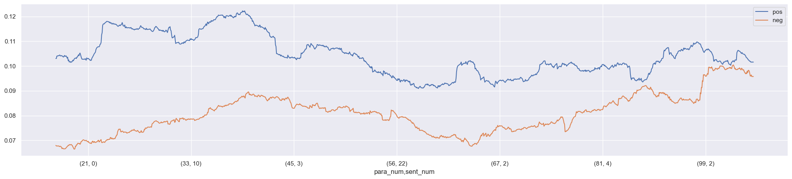
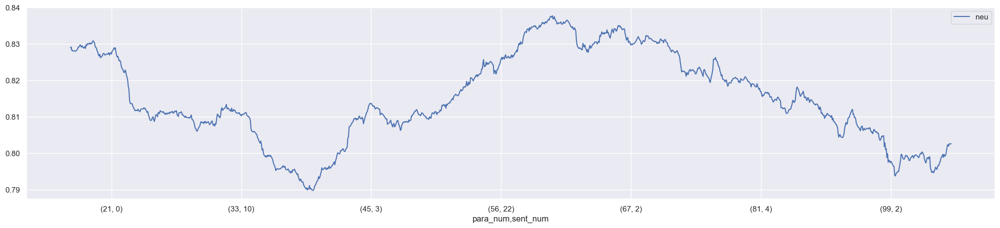
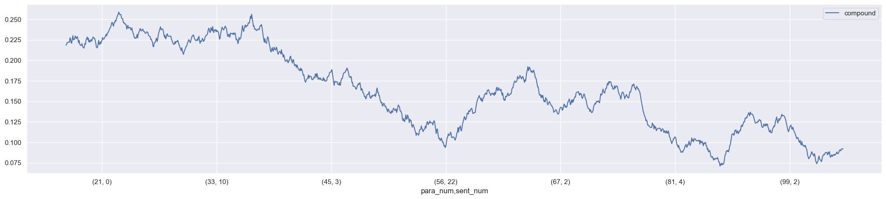
NORABBEY_vader_cols = NORABBEY_sents.sent_str.apply(analyser.polarity_scores).apply(lambda x: pd.Series(x))
NORABBEY_vader = pd.concat([NORABBEY_sents, NORABBEY_vader_cols], axis=1)w = int(NORABBEY_vader.shape[0] / 5)
NORABBEY_vader[['pos','neg']].rolling(w).mean().plot(figsize=(25,5));
NORABBEY_vader[['neu']].rolling(w).mean().plot(figsize=(25,5));
NORABBEY_vader[['compound']].rolling(w).mean().plot(figsize=(25,5));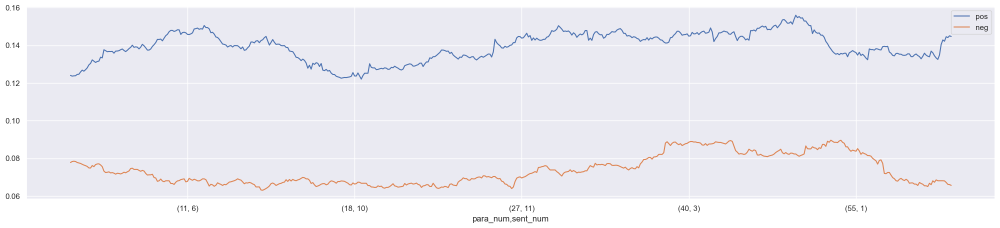
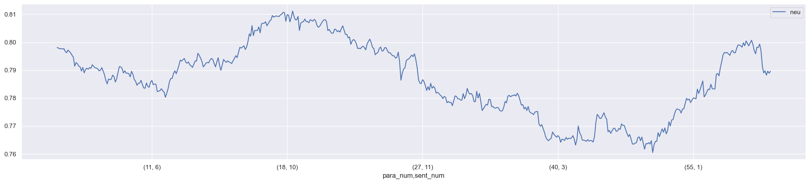
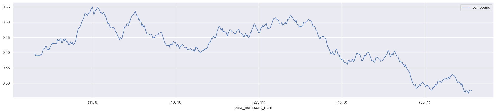